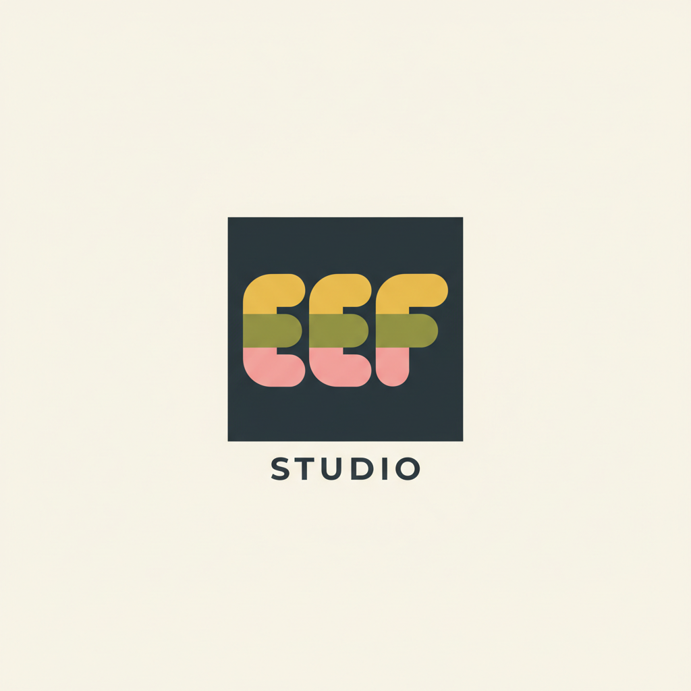
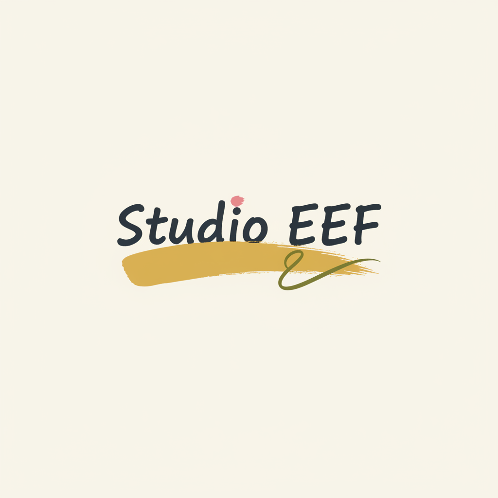
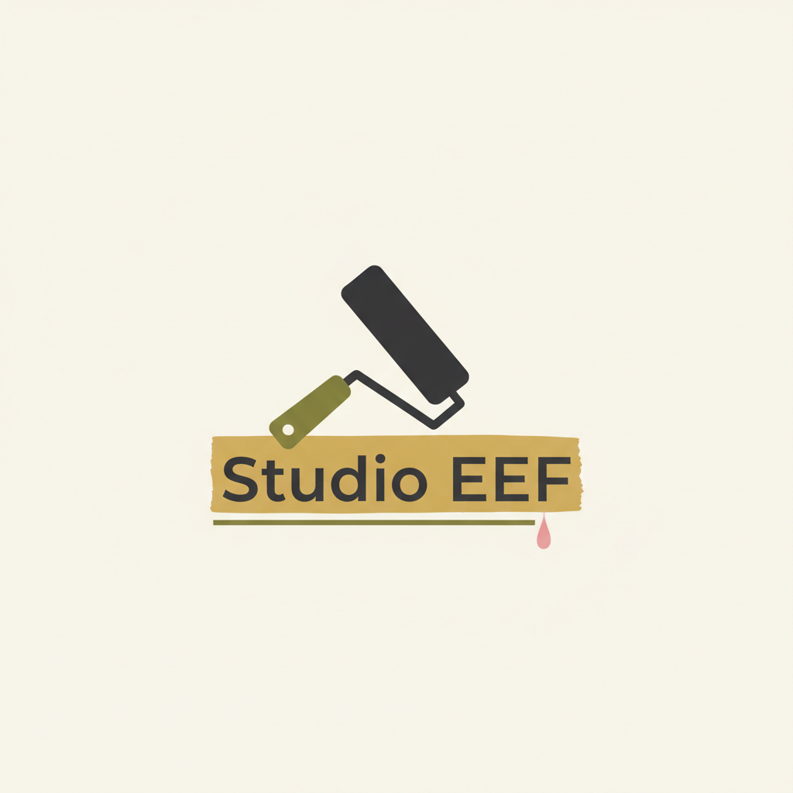
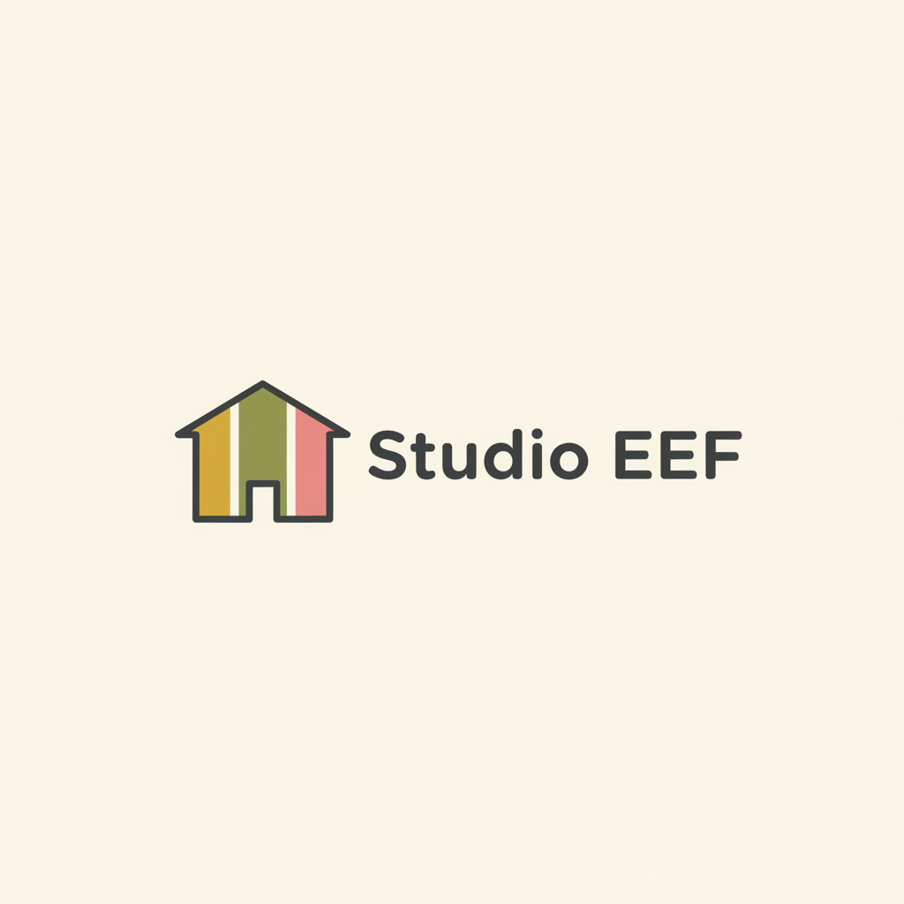
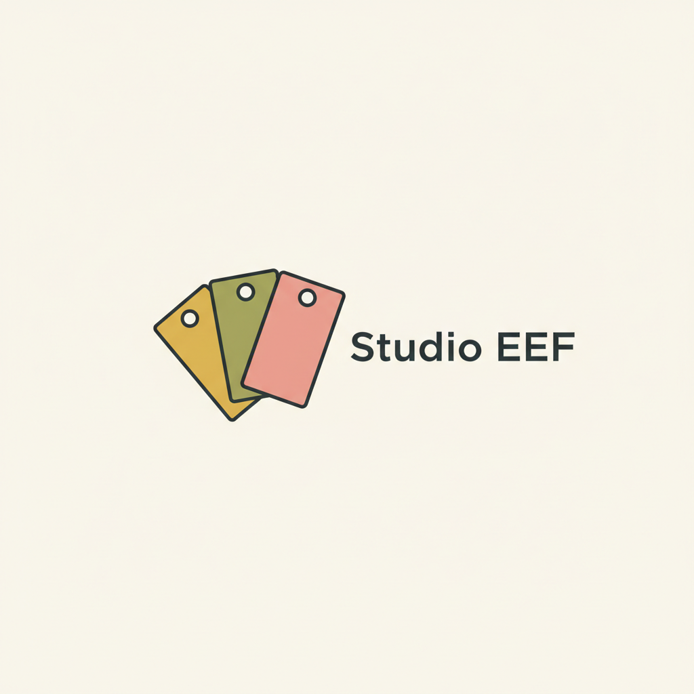

Vijf richtingen, allemaal in het kleurenpalet van het originele logo (goud · olijf · roze · antraciet). Gegenereerd met Nano Banana. Let op: check de spelling van de tekst!

Dichtst bij het huidige ontwerp: donkere tegel met EEF in verfbanden, STUDIO eronder.

Typografisch: een zelfverzekerde gouden kwaststreek onder ‘Studio EEF’.

Instrument als beeld: roller die een gouden streep onder de naam trekt, met roze druppel.

Huisomtrek met drie verfbanen in de gevel — sluit aan bij de interactieve gevel op de site.

Drie waaierende verfstaalkaarten — sluit aan bij de verfstaal-kaarten op de site.
• Zeg welke richting je mooier vindt (A–E).
• Dan verfijn ik die met extra generaties (andere kleur- verdeling, lettertype, details).
• De winnaar werk ik daarna om naar een schoon SVG-logo voor op de site.
• Het origineel van Eef blijft staan tot jij iets kiest.